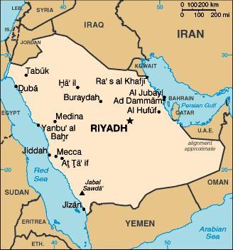
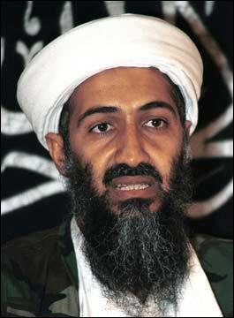

El Wahabismo

El término “wahhabi”, como lo conocemos en la actualidad, hace referencia al movimiento religioso fundado por Muhammad ibn Abd al Wahhab, del que toma el nombre, aunque se autodenomina “Salaf as-Salih”,”la forma correcta de actuar en función a las enseñanzas de píos predecesores”. Por ello, los miembros de este movimiento religioso prefieren ser reconocidos como salafistas.
A través de la presente reseña, conoceremos mas sobre un movimiento religioso radicalmente intransigente, basado en la intolerancia y que se declara frontalmente incompatible con los principios democráticos, de cómo se gestó al abrigo de la familia de los saud y cómo ha terminado por convertirse en referente y potenciador de una de las versiones mas controvertidas del Islam.
Introducción: Reflexiones iniciales sobre Arabia y su religión
“¿Se imagina usted que la denominación oficial de España fuera España de los Borbones? Pues Arabia Saudí es el único país del mundo cuyo topónimo oficial va acompañado del nombre de la familia reinante. La saga de los Saud fue institucionalizada hace 240 años por el jeque Muhamad Ibn Saúd, que convirtió en ley fundamental de su señorío feudal el catecismo de los wahabitas, una secta fundamentalista sunní creada por Muhamad Ibn al-Wahab, coetáneo de Ibn Saud. El monarca saudí es, por tanto, el guardián del wahabismo, aparte de dirigir una familia reinante compuesta por unas 3.000 personas, entre las que figuran cientos de jeques y decenas de príncipes.”
De este modo tan demoledor comienza Félix Soria su análisis de la Arabia Saudí actual; un estado cuya doctrina dominante a pesar de ser tan puesta en cuestión en diversos círculos intelectuales, es pasada de largo cuando llega al ámbito político a pesar de ser el soporte intelectual del extremismo islámico en cuya cúspide se eleva la misma Al-Qaeda.
Stephen Schwartz, uno de los expertos mas reputados a la hora de rastrear este tipo de doctrinas, señala asimismo:
“Los musulmanes sunníes moderados pueden ser reconocidos en persona planteando una cuestión simple: “¿Qué piensa del wahabismo, la secta estatal islámica de Arabia Saudí?” Cada musulmán del mundo conoce el wahabismo, y sabe que está encarnado por al-Qaida. Si a un musulmán sunní se le pregunta acerca del wahabismo y responde que es una doctrina controvertida y radical que provoca muchos problemas a causa del dinero saudí, el que responde probablemente sea moderado. Denunciar a los saudíes por sí no es suficiente; los radicales critican a la monarquía saudí por implementar de manera insuficiente los principios wahabíes. La causa raíz del terror sunní es el wahabismo,..”
En 1966, el Gran Sheik de Al-Alzahar, primera autoridad religiosa de Egipto se planteó: “¿Cómo pudo ocurrir que una persona que mata mujeres, niños, ancianos y personas inocentes en general, pueda ser llamado mártir?. Es increíble, en realidad, las creencias se han vuelto herramientas efectivas de aquellos interesados mantener el poder secular.”
Resultaría harto complicado pretenderse imparcial o darse visos de cierta “cientificidad” a la hora de opinar sobre una doctrina como esta, tratar de justificar el silencio y condescendencia de buena parte de la comunidad internacional hacia la doctrina que arropa y difunde el estado saudí, o pretender hablar de Al qaeda obviando el papel del régimen autoritario de los saud. Es por ello fundamental que consideremos la importancia de tratar de uno de los referentes ideológicos que a pesar de una forma de entender el mundo apenas resulta cuestionado en ningún estamento internacional, los mismos que se declaran inflexibles en otras cuestiones.
Los wahabíes sostienen que la sharia (preceptos religiosos musulmanes) debe tener rango de ley civil y que las constituciones de los países árabes tienen que aplicar esos principios. La sharia de los wahabitas, es singularmente involucionista porque, al contrario que la sharia de general aplicación entre los sunníes, prescribe que las únicas leyes válidas son las extraídas del Corán y de los seis libros de hadices (la shuna), los que exponen las sentencias y opiniones atribuidas a Mahoma y a sus primeros discípulos, con lo que deslegitima cualquier norma o ley posterior y ancla su legislación en el medioevo.
Arabia Saudí es, en la actualidad, un estado de orden absolutista en el que la familia del monarca, que usualmente ha ocupado la función de primer ministro cuando este ha existido, acumula todos los cargos de un “gobierno” que, como hemos señalado, se dirige por la ley islámica, basado en la sharia, que ni siquiera dispuso de Constitución escrita hasta marzo de 1992, cuando el rey Fahd establece la Majlis as-Shura (Asamblea Consultiva), cuyos noventa miembros son designados de cualquier modo por el propio monarca.
Un país de contradicciones
Arabia Saudí, es un país con algo mas de 26 millones de habitantes que gozan de un IDH (Índice de Desarrollo Humano) bastante elevado, 0,812 y ocupa el lugar 27 en la escala mundial de PIB por habitante. En el existe una asistencia médica general de buena calidad con una tasa de mortalidad de sólo 2,55 muertes por 1.000 personas. Este cúmulo de datos podría llevarnos a pensar que se trata de un estado avanzado y próspero, con grandes infraestructuras públicas y abastecimientos en el que la propia familia real hace pública una constante ostentación de riqueza. Sin embargo, al poco de pasar del análisis económico, podemos ver como existe el tremendo contrapunto de tratarse de un país en el que rige la ley islámica, prácticamente sin otro tipo de reglamentación, en el que la mitad de la población carece de derechos; donde no existe libertad de prensa, religiosa, ni prácticamente representación democrática que no este controlada por los saud.
El régimen legal del estado saudí ha sido una constante fuente de incertidumbres y una pugna por establecer cierta lógica dentro de una legislación netamente religiosa. Ya en 1954 se establece un relativo cuerpo legal complementario, sobre todo ante la necesidad de establecer reglamentaciones, que lleva a formar en 1962, lo que se conoce como Tribunal de Revisión, formado por clérigos que auditan toda cuestión reglamentaria que escape a la interpretación coránica promovida por el Ulama mayor, reluctante por definición a cualquier cambio y que determinará la prevalencia religiosa en caso de conflicto. Como señalamos, las primeras reglamentaciones de los 50, hacían referencia al sector petrolífero, necesitado de un marco de referencia para el comercio con el extranjero, aduanas e impuestos. Pronto se haría necesario establecer códigos de circulación y otros elementos de organización social en los que la religión difícilmente podría dar respuesta, no sin la constante fricción con el ulama que siempre hace prevalecer la sharia hasta el extremo en el que nunca ha existido ministerio de justicia desde que en 1953 se estableciera el primer consejo de ministros.
La educación ha sido otro frente en el que el wahabismo ha sabido prevalecer, con la formación de escuelas coránicas y universidades propias que impidieran que las élites tuvieran que formarse en países no creyentes. La universidad de Medina pasará a ser centro de formación en el que el 75% de sus estudiantes vendrán desde fuera de la propia Arabia.
Asimismo, como veremos mas adelante, el papel de liderazgo en la Liga Árabe y la propia formación de la Asamblea de la Juventud Musulmana desde 1972, llevará a extender el ideario wahabí y de autores como Qutb o Mawdudi a través de las madrasas financiadas por estos para combatir tanto la ola de nacionalismo secular árabe en esos momentos en auge, como al sufismo.
La radio, televisión y prensa escrita han sido, como es de suponer férreamente controladas. La primera emisora de radio comenzaría en 1948 y hasta 1963 no se podría oír la primera voz femenina, tras controvertida revisión del ulama y el apoyo directo del príncipe Faisal. En 1965 comenzarían las primeras emisiones televisivas con términos parecidos en los que se persiguió, con duras polémicas, cualquier situación en la que aparecieran mujeres y hombres en cualquier situación “romántica”, como demostraría el ataque a la emisora por un grupo encabezado por el propio príncipe Musaid, uno de los nietos del rey Abd Al Aziz. Durante el reinado de Faisal, se reservaría una gran parte del tiempo de emisión a programas religiosos directamente controlados por el clero y comenzaría la producción de programas y series de países árabes, como manera de hacer frente tanto al alcance que la difusión de la radio y televisión de Nasser tenía en ese momento como a los medios de masas occidentales.

Los orígenes
La doctrina del wahabismo, en la forma en el que lo conocemos actualmente en lo que hoy es el territorio de Arabia Saudita, fue introducida por Muhammad ibn Abd al Wahhab (1703-1792), un clérigo árabe de la rama islámica sunní, predominante en la Península Arábiga que plantea un movimiento que pronto se ligará por un lado al generalizado sentimiento contrario a los turcos como hacia otras interpretaciones de la religión. Su auge se debe tanto a la pronta relación con la dinastía Al-Saud y al apoyo mutuo que se brindaron, como al carácter férreo de su aplicación doctrinal.
Basándose en la obra de Ibn Taymiyya, las predicas de Wahhab en su localidad natal, Najd, no serían bien recibidas entre una población mayoritariamente sunní, cuya interpretación religiosa es, en principio, mas abierta, al darle importancia no solo a los dichos reseñados en el Corán sino a la a la Sunna, colección de dichos y hechos atribuidos a Mahoma y transmitidos en forma oral, con lo supone una interpretación menos restrictiva y mas capacitadora para adaptarse a los tiempos. Las ideas de Ibn Taymiyya ya resultaban controvertidas en su tiempo, dado que afirmaba que ciertos pueblos que se auto denominaban como musulmanes, como por ejemplo los mongoles, conquistadores del califato abásida, eran en realidad no creyentes, y que los musulmanes ortodoxos debían conducir la “jihad” contra ellos.
Su prédica inicial llegará al extremos de que incluso sus propios padre y hermano, clérigos ambos, llegarían a repudiarle ante las muestras cada vez mayores de intolerancia y enfrentamiento, que finalmente le conduciría al exilio.
Tras su expulsión, Wahhab marcha a Diriya donde conoce a Muhammad bin Saud, jefe local. Pronto se establecería una auténtica simbiosis entre estos ambos, con la nueva doctrina del “Wahabismo” como corpus ideológico central, Wahhab auto denominado “Juez” y Muhammad ibn Saud como nuevo “Emir”, cimentando las bases de la actual monarquía Saudí al establecer como ley que solamente sus descendientes pudieran sucederle. Asimismo, la justificación religiosa de restaurar la pureza del Islam le sirve como impulso definitivo para la conquista del resto Arabia. A partir de este momento, resultará imposible establecer una disociación entre wahabismo y los Saud; entre la propia historia de esta “Arabia Saudi” y su religión dominante.
Entre las primeras críticas a esta versión del Islam, destacaremos la de Ayub Sabri Pasha , contralmirante en tiempos del XXXIV sultán Otomano, ‘Abdel Hamid Jan II (1258-1336 (1842-1890)), que escribiría un libro en el que criticó el Wahabismo con todo detalle desde la óptica musulmana y atendiendo a los peligros que el proselitismo de esa doctrina suponía, cargando especialmente las tintas en lo regresivo de sus preceptos, la forma en la que entienden el concepto de la jihad (guerra Santa) y la “literalidad” con la que se interpretan los preceptos coránicos. Como advertencia a los practicantes de la tradición sunní, como señalamos mayoritarios en la península arábiga. Este texto esclarece el potencial que la nueva secta es capaz de tener, en una de las primeras grandes controversias, interesada por otra parte al ser aun el imperio otomano la potencia dominante en la región.
Expansión militar
La historia de Arabia pasaría durante los años siguientes al establecimiento de la monarquía saudí por periodos azarosos en los que las diferentes potencias regionales y las oligarquías locales confrontarían permanentemente. Así las fronteras de sus dominios y ciudades bajo su poder permanecerán en disputa prácticamente hasta nuestros días, como serán los casos de límite con Omán (disputada hasta 2001) o con Emiratos Árabes Unidos, pasando por los repartos de zonas neutrales con Kuwait, Irak o Siria.
Conflictos como el ataque a la ciudad iraquí de Kerbala en 1801, con el saqueo de los lugares sagrados para los shiíes, o la conquista en 1803 de La Meca y Medina, supondrían los primeros pasos en su expediente de limpieza religiosa, con la persecución y destrucción de mezquitas Shiíes.
Pronto los turcos otomanos reaccionarían aliándose con Mohammed Ali Pasha para retomar La Meca y Medina en 1817 y actuando directamente al siguiente año para conquistar Najd y la capital saudita de Diriya, capturando al emir Abdullah bin Saud, que sería llevado a Estambul, junto con sus colaboradores más inmediatos para ser decapitados.
A pesar de estas medidas los otomanos no acabaron con el wahabismo en la región de Najd, donde se formaría el emirato del mismo nombre, con Riyad como capital. Esto supondría las bases de la vuelta al poder de los saud en la zona a partir de 1824; que mantendrían hasta 1899, cuando fueran nuevamente derrotados por el emir Mohammed ibn Rasheed, de la dinastía de los rachidis, de nuevo con asistencia turca, expulsando a Abd al-Raman ibn Saud, que debió exilarse en Kuwait.
Entretanto, las provincias de Hidjaz y Asir, sobre el mar Rojo, permanecerían en poder de los otomanos, aunque contando con una razonable autonomía, debido al prestigio religioso de los jerifes de La Meca, que se decían descendientes de Mahoma.
En 1902, Abd al-Aziz, hijo de Abd al-Raman ibn Saud, nuevamente con apoyo wahabita, organizó una cofradía religioso-militar, la Ikhwan, en la que consiguió encuadrar cerca de 50 mil beduinos para invadir Najd. Doce años después los saud derrotaron a los rachidis y anexaron la región de Al-Hasa, sobre el golfo, que estaba bajo dominio directo de los turcos, contra los cuales las fuerzas de Saud lucharon durante la Primera Guerra Mundial. Al término de esta, Inglaterra se había conformado como la potencia dominante en la región y se encontraba en la difícil situación de llevar a término el compromiso con a Abd al-Aziz ibn Saud, al que, a cambio de su ayuda contra los turcos, habían garantizado las integridad de un estado árabe al mimo tiempo que tenían otro acuerdo en similares condiciones con Hussein ibn Alí, jerife de La Meca, sobre un reino que abarcaría Palestina, Jordania, Irak y la península arábiga.
Conocedor de los términos de ambos acuerdos, El emir del Najd creyó que los ingleses no cumplirían lo prometido a Hussein dado que un estado de tales dimensiones, con la familia del Profeta al frente y con la principal ciudad santa del Islam como capital, alteraría cualquier equilibrio regional tan anhelado por la potencia inglesa. Por ello, cuando en 1924 Hussein se autoproclamara califa, Abd al-Aziz aprovecharía para invadir su territorio, pese a la oposición inglesa, expulsando a los Hachemíes y en enero de 1926 sería proclamado rey del Hidjaz y sultán de Nadj en la gran mezquita de La Meca. En 1932, el “reino del Hidjaz, del Najd y sus dependencias” sería formalmente unificado con el nombre de Arabia Saudita. Esto les daría el control sobre el Hajj, el peregrinaje anual a los lugares sagrados y la oportunidad de predicar el wahabismo entre los peregrinos.
A pesar de ello, el wahabismo no pasaba de ser una corriente menor en el Islam hasta que en 1938 se descubrieran los yacimientos de petróleo, momento a partir del que el peso saudí comenzaría a expandirse por todo el mundo musulmán.
La hegemonía del petróleo
Efectivamente, a partir de 1930, se permitiría a compañías estadounidenses iniciar tareas de prospección de petróleo que llevarían a finales de esa década a convertir al país en el principal productor de petróleo mundial; la base de todo el modelo de crecimiento del periodo.
En 1945, Arabia Saudí entrará en la Organización de las Naciones Unidas (ONU) y en la Liga Árabe. Se opuso a la creación del Estado de Israel, pero tuvo una intervención discreta durante la guerra de la Liga Árabe contra el Estado judío entre 1948 y 1949. En junio de 1951, Arabia Saudí consintió el uso de la base aérea de Dhahran por parte de Estados Unidos durante otros cinco años en agradecimiento por la ayuda técnica prestada por este país y el permiso para la compra de armas bajo un tratado de asistencia de defensa mutua. En el mes de diciembre, un nuevo acuerdo con la Arabian-American Oil Company (ARAMCO) proporcionaba a Arabia Saudí el 50% de los beneficios netos de la compañía.
A su muerte, ocurrida en 1953, comenzaría una gestión mucho mas dudosa por parte de su hijo Saud, que dilapidó las rentas del reino provenientes de la ARAMCO en palacios, harenes, automóviles lujosos y en los casinos del mediterráneo francés hasta el extremos de llevar al país de su familia al borde de la bancarrota, lo que sería una de las justificaciones que sabría emplear su hermano Faisal, encargado ya de la diplomacia, para forzar su dimisión y ser nombrado primer ministro primero en 1958. Se inicia, de este modo, un periodo en que la relación entre ambos hermanos pasa por diferentes momentos de crisis, como la dimisión del cargo en 1960 tras una larga disputa entre ambos. En marzo de 1964, sería nombrado regente y ocho meses más tarde, tras obligar a Saud a abdicar, se convirtió en rey. Al poco, Faisal aboliría el cargo de primer ministro para convertirse en gobernante absoluto.
Será a manos de este cuando el país inicie una auténtica modernización, recuperándose económicamente, a lo que contribuye sobremanera el ascendente empuje de los “petrodólares”, aunque sin influir esto en el régimen político, que se consolida en la autocracia apoyada por los emires provinciales y resto de jefes tribales de un régimen auténticamente feudal.
El carácter de profundo arraigo wahabí de este gobernante se manifestaría pronto en la política internacional, con la militante pugna contra el estado hebreo y cualquier tentativa occidentalizante. Sin embargo, el peso del mayor productor de petróleo y su férreo rechazo a la Unión soviética habrían de posicionarlo convenientemente en la órbita de intereses estadounidenses. Durante la guerra fría, será precisamente el ateismo del estado soviético una de las excusas de su alineamiento, frente a otras tendencias de la liga árabe como las experiencias socializantes de Nasser en Egipto y el baasismo de Siria e Irak, iniciativas a las que a la larga tomaría la delantera por el peso en la OPEP y sobre todo por la creciente influencia dentro de la Liga Árabe, en la que los fondos saudíes comenzarán a ser dirigidos en programas de construcción de mezquitas y otras iniciativas en las que el proselitismo wahabita comienza a trabajar a mayor escala.
En el terreno interno, la alianza con EE.UU. comenzaría a ser a ser puesta en tela de juicio ante la evidencia del creciente respaldo de ese país a Israel, sobre todo a partir de la guerra de 1967, dudas que las declaraciones de Faisal, que solía decir que su único sueño era poder rezar un día en la mezquita de Omar, en una Jerusalén liberada, apenas quedaban como comentario pintoresco frente a la práctica de la “política real”, en la que de demuestra como aliado clave en la política norteamericana en la región.
Durante la Guerra Árabe-Israelí de 1973, Faisal apoyó el embargo petrolero a los países que apoyaban a Israel, con EE.UU. a la cabeza, provocando una brusca escasez de combustibles que llevaría a la OPEP a cuadriplicar el precio del petróleo en pocos meses, inaugurando una nueva era en las relaciones internacionales, cada vez mas ambivalentes frente al mundo occidental al que condenaba diplomáticamente pero con el que cerraba acuerdos comerciales.
Faisal fue asesinado en 1975 por un sobrino, al que declararon demente. Lo sucedería por poco su hermanastro Jalid, que por su estado de salud seria pronto relevado por su hermano el príncipe Fahd ibn Abdul Asís.
Por esta época, los ingresos petroleros, que sumaban 500 millones de dólares al año cuando asumió Faisal en 1964, eran de casi 30 mil millones a su muerte. Arabia Saudí había transformado su fisonomía de país con la construcción desde cero de nuevas ciudades, hospitales, universidades, carreteras. Buena parte de este grueso de capital, ingresado por la explotación petrolífera, sería invertido en capitales financieros en bancos occidentales, lo que terminaría por acrecentar el circulante mundial, responsable en buena parte de las crisis de deuda externa de los dominados países subdesarrollados en los años 1984-5.
Será por esta época cuando se comenzaría a gestar la primera ruptura entre la cultura wahabita y los Saud, una oposición que nuevos grupos fundamentalistas, surgidos al amparo y con la financiación de estos, que acusaban de traición al Islam a la familia reinante y que tendría su primera manifestación, como veremos mas adelante con la toma, en 1979 de la gran mezquita de la kaaba.
Alianzas contradictorias
Efectivamente, una nueva generación de Saudíes formados en Europa o EE.UU. y no en las escuelas coránicas, estaba copando cargos de importancia y tomando ciertos modos de vida occidentales, lo que progresivamente irá larbando una ruptura con las bases teológicas que habían legitimado a la monarquía Saudí.
La aproximación a EE.UU. será aun mayor a partir del derrocamiento del Sha de Persia en 1979, con el ascenso al poder de una fuerza shii a la que ambos estados veían como una amenaza.
Como hemos señalado, tras la muerte del rey Khaled, en 1982, asumiría el poder su hermano Fahd, auténtico arquitecto de la modernización de Arabia Saudita. Un año antes, el propio Fahd había promovido un plan de paz para el Oriente Medio, con el apoyo de varios países árabes, la OLP y EE.UU. y que no llegaría a término por la oposición de Israel. En éste, se proponía la creación de un Estado palestino con Jerusalén como capital, la retirada israelí de los territorios ocupados y el desmantelamiento de las colonias judías implantadas desde 1967.
A pesar del constante apoyo estadounidense al estado hebreo, Fahd se mostraría como el gran aliado regional de Washington con la la construcción de bases navales en Jubail y Jiddah. De cualquier modo, las inversiones y los depósitos bancarios del reino estaban íntimamente vinculados con el funcionamiento de la economía estadounidense, en un curioso baile de intereses en el que terminaban confluyendo tanto el lobby judío como las inversiones saudíes.
Una de sus primeras tentativas de llevar adelante una política económica organizada al margen de la exclusiva fuente de ingresos petrolíferos, ante los primeros indicios de crisis, como el cierre deficitario de las cuentas de 1084, será el plan quinquenal 1985-1990, con un éxito desigual y que seguiría vinculando la economía de este estado, de cualquier modo, a su base petrolífera aunque ciertamente trata de dirigir sus inversiones en crear ciertas estructuras económicas propias, marco en el que surgen con mayor vigor las grandes compañías saudíes que operan hoy en día en el ámbito internacional.
Durante la guerra entre Irak e Irán (1980-1990), Arabia Saudí respaldaría financieramente a Irak, ante el temor de una expansión de la Revolución Islámica iraní sobre el Golfo. Fahd cambió su título de rey por el de “Guardián de los Lugares Santos”,pero eso no aplacaría la ola de protestas de los peregrinos a La Meca, indignados por la alianza entre Riyad y Washington y la mercantilización de los santuarios, hoy rodeados de centros comerciales, autopistas y otros símbolos de la cultura occidental. En1987, una marcha de mujeres y mutilados de guerra iraníes en La Meca fue reprimida a balazos por la policía saudí y cientos de peregrinos murieron. Como respuesta fueron asaltadas e incendiadas las embajadas de Arabia Saudita y Kuwait en Teherán. Las relaciones entre ambos países se volvieron sumamente tensas y no se normalizaron hasta 2000, cuando se firmó un tratado de cooperación económica.
En marzo de 1992, Fahd promulgará una serie de decretos con la finalidad de descentralizar el poder político. Esta legislación organizada en 83 artículos, se denominará “El sistema básico de gobierno”, estableció, entre otras disposiciones, un Consejo Asesor, con facultad para evaluar todos los asuntos de política nacional y la creación del mutawein, o policía religiosa, cuyo mandato es asegurar la observancia de las costumbres islámicas.
La hostilidad de una parte de la población hacia EE.UU. se acentuó y llegó a un punto crítico con el atentado a la base militar estadounidense en la ciudad puerto de El Khobar, en junio de 1996, que dejó un saldo de 19 soldados muertos.
Por razones de salud, Fahd transfirió en 1996 el poder a su hermano Abdullah Ibn Abdul Aziz al-Saud a quien había confirmado como heredero del trono cuatro años atrás.
En septiembre de 2002, el príncipe Saud al Faisal, ministro de Asuntos Exteriores saudí, sugirió que Arabia Saudita permitiría el uso de su territorio para una eventual acción militar contra Irak solamente si tal acción era respaldada por una resolución del Consejo de Seguridad de Naciones Unidas. En octubre la frontera entre Arabia Saudita e Irak se abrió oficialmente por primera vez desde la invasión a Kuwait en 1990.
La invasión estadounidense a Irak en marzo de 2003 tuvo consecuencias catastróficas para el equilibrio en toda la zona del Golfo Pérsico y contribuyó a que se multiplicaran los atentados suicidas en Irak y también en Arabia Saudita.
A partir de ese momento, comenzará a ser la propia Arabia Saudi objeto de un terrorismo cuyo germen teórico no deja de ser ajeno a los propios sujetos de este. De este modo, en mayo de 2003, la explosión de varios coches bomba, dejarán como saldo de más de 30 muertos en una zona residencial de Riyad. En noviembre, otro atentado dejó 17 muertos. La violencia terrorista continuaría durante 2004 y, en abril, cuando se registró el primer ataque a un edificio oficial saudí, cuando un coche bomba estalló frente a la sede del organismo encargado de la Seguridad General del reino. Un mes después se produjo un enfrentamiento entre agresores identificados como terroristas y fuerzas oficiales sauditas en la ciudad portuaria de Yanboa. Una serie de ataques terroristas en Riyadh, por miembros de la red al-Qaeda en mayo y junio de 2004 continuará la campaña de desestabilización. La capital del país fue escenario de violentos ataques contra el Centro Petrolero al-Khobar, la sede de la Organización de Países Árabes Exportadores de Petróleo, además del lujoso hotel Oasis Resort, que se suponía una fortaleza hasta el momento.
El rey Fahd firmaría, tras la muerte del lider de al-Qaeda en Riyad, Abdul Aziz al-Muqrin, un decreto de amnistía para los sospechosos de terrorismo que se entregaran a las autoridades antes del fin de julio de ese mismo año.
En agosto de 2004, se anunció que Arabia Saudita celebraría elecciones municipales a principios de noviembre. Las mismas serían el primer paso hacia una democratización del país, medidas que se han señalado como parte de la presion estadounidense para legitimar su apoyo incondicional, aunque se estipulara edad mínima para votar, ni si habría voto femenino.
Mientras tanto, un ataque contra el consulado de EEUU en Jeddah, al oeste del país, morirían al menos 7 personas, de los que cuatro eran guardias saudíes que custodiaban la sede diplomática. En enero de 2005 dos nuevas explosiones por coche bomba contra el Ministerio del Interior en Riyad, fueron atribuidas a al-Qaeda.
Sin permitirse la participación de mujeres, se celebraron en febrero de 2005 las anunciadas elecciones municipales. A comienzos de agosto, el rey Fahd murió tras una década de enfermedad, y el príncipe Abdullah, que había estado actuando como regente durante ese tiempo, prestó juramento como nuevo rey y primer ministro y designó como príncipe heredero al ministro de defensa.
El nuevo monarca se enfrenta a un país en el que crece una inesperada amenaza islamista y con un gasto interno, sobre todo a cargo de la propia la familia real, económicamente intolerable. Así, después de 12 años de negociaciones, se adheriría a la Organización Mundial de Comercio.
Entre las últimas noticias reseñables al respecto, podemos destacar como el El ex-embajador estadounidense en Irak, Zalmay Khalilzad, denunció en julio de 2007 en su columna del período New York Times que Arabia Saudita no sólo no estaba haciendo nada por ayudar a Irak, sino que minaba los esfuerzos que se realizaban para buscar avances en la compleja situación de aquel país. Agregó además que Ryad apoyaba a combatientes sunitas y atacantes suicidas, dándoles paso libre en la frontera con Irak.
Influencias modernas en la división del extremismo de origen wahabi
Entre los hecho y autores que primero señalaran el punto de ruptura entre el Wahabismo oficializado por la familia Saud y el actual integrismo islámico de origen sunní (debemos recordar que no tratamos en este estudio al sismo) destacaríamos a dos ideólogos cuya influencia es hoy básica en las escuelas coránicas de esta corriente; Sayyib Qutb y Mawlana Abu’l A’la Mawdudi, y a los que une el común enemigo de la cultura occidental.
Para muchos, Qutb es considerado uno de los principales teóricos del islamismo moderno. Convencido de que la sociedad occidental estaba enferma de individualismo, tras vivir un tiempo en EEUU, comenzaría a promulgar a su regreso a Egipto la necesidad de “limpieza” de la sociedad musulmana de cualquier influencia occidental para evitar esa misma “degeneración”.De este principio surge la afirmación de que los regímenes musulmanes contemporáneos eran apostatas, al aplicar las leyes seculares y el laicas en lugar de la sharia, instituida por Alá.
Uno de los conceptos centrales de la visión de Qutb es el de jahiliyyah, o ignorancia barbárica, forma en la que considera a las civilizaciones occidentales y su concepto de democracia, derecho o el tratamiento a la mujer. Con estos principios, no es de extrañar que el pensamiento de Qutb sea considerado como una de las principales influencias conformadoras de Al-Qaeda, y en especial, de sus líderes, Ayman al-Zawahiri y Osama bin Laden.
El 30 de agosto de 1965, Nasser acusaría oficialmente a los Hermanos Musulmanes, tras haberlos ilegalizado en 1954, de haberse reconstituido. Su líder, Sayyib Qutb, es detenido juzgado y ejecutado por traición el 29 de agosto de 1966. El actual movimiento salafista egipcio es su continuador clandestino.
Será, sin embargo, Mawlana Abu’l A’la Mawdudi, el que se considere como proveedor de estructura filosófica del terrorismo fundamentalista. La traducción y difusión de su obra en las madrasas construidas bajo los diversos programas de la Liga Árabe con el dinero y supervisión saudí han sido claves de su éxito. Mawdudi afirma en sus obras que “la soberanía política pertenece solo a Dios y por tanto debe ser ejercida en su nombre por ser un gobernante religioso guiado solamente por la Ley Islámica. En ese Estado no puede haber espacio para actitudes o creencias occidentales. La decadencia del Islam ocurrió por la aceptación del secularismo occidental y por tanto debe ser desarraigado para restablecer la pureza islámica. Cualquiera y todos los medios deben usarse para salvar al Islam y retornarlo a su lugar apropiado”.
La tradicionalmente reconocida tolerancia del Islam, queda radicalmente rechazada así como sus críticas contra la violencia, supuestamente porque la amenaza es muy grande: “La crueldad contra los no creyentes, los pusilánimes, los musulmanes no devotos y los inocentes está justificada por la primordial importancia del objetivo”. Los escritos de Mawdudi desafían a las autoridades tradicionales y da a los terroristas una justificación religiosa que utilizan con gran oportunidad.” Ante la difusión de estos principios teóricos entre capas de población cuyo único acceso cultural, cuando no incluso el nutritivo, son este tipo de doctrinas, no resulta demasiado extraño ciertos resultados actuales.
“La jihad no es más que otro nombre para la voluntad de hacer reinar el orden de Dios; por eso el Corán ve en ella la piedra de toque de la fé. En otras palabras, las personas que tienen la fé anclada en el corazón no cederán jamás a la dominación de un sistema malo; no dudarán a sacrificar su vida, en la lucha por establecer el Islam”
El asesinato del Presidente egipcio Anuar El Sadat en octubre de 1981 a manos de miembros del grupo Tanzim Al Yihad (Organización del Yihad), seria uno de sus primeros productos concretos.
Este teórico, opone la “verdad divina” a la democracia y se destaca por su polémica contra el sufismo, que considera una practica ilegítima que es necesario erradicar y que llevará a la simpatía incondicional del Ulama wahabí de Arabia Saudí, lo que contribuirá favorablemente a la difusión de su obra.
Otro de los momentos claves en la gestación de movimientos integristas de parentela wahabita sería, sin duda, la masiva campaña de reclutamiento jihadista a nivel global ante la invasión soviética de Afganistán de diciembre de 1979, en el que se llevaría a término el primer estado contemporáneo, si salvamos algo de distancia con Arabia, netamente wahabita. En dicha campaña, el apoyo saudí y la ayuda estadounidense serían claves en la gestación y final triunfo del movimiento talibán. Junto a esto, la formación de grandes escuelas coránicas (Madrazas) en Pakistán con el dinero saudí y al amparo, las mas de las veces, de los programas de la Liga Árabe, constituirá una fuente de desestabilización regional y ascenso del integrismo en la zona con el apoyo constante a sus vecinos afganos y en la disputada región de Cachemira.
Paralelamente, podemos señalar un proceso que en el que se producen los primeros indicios de ruptura entre los saud y su religión como sería, el asalto a la Gran Mezquita de La Meca en noviembre de 1979 perpetrado por un grupo armado dirigido por Juhayman Al Utaybi, que se produce en las mismas fechas en que la revolución islámica de los shiies iraníes derrocan al mayor aliado regional de los estados unidos, como era en eses momento la monarquía persa del Shah.
Bajo la acusación de estar vendido a los intereses de los EE.UU. y de permitir la occidentalización del país, Al Utaybi, se revela contra la familia real, asaltando la gran mezquita de La Meca, donde se harían fuertes en los subterráneos y resistirían a lo largo de quince días de asedio durante los cuales se produjeron disturbios y atentados por todo el país. La rebelión seria finalmente sofocada con ayuda de tropas jordanas, Al Utaybi será detenido y luego decapitado en compañía de 68 de sus seguidores.
El conflicto irano-iraquí será otro caldo de cultivo para entender el actual enfrentamiento de los grupos extremistas de origen sunni frente a los shiies de irak. La pretensión iraní de demostrar una unidad con la minoría sunni de su territorio será mas una forma de excusar su paralela labor de proselitismo, como se demuestra con los grupos palestinos y su participación en el conflicto libanés.
Sin embargo, la gran figura carismática de todo el nuevo movimiento islamista de la actualidad será, sin duda, la de Osama bin Laden, en la que se han centrado todos los objetivos sobre todo después de su campaña terrorista frente a intereses occidentales y las proporciones de algunos de sus atentados contra población civil en EEUU, España o Gran Bretaña. Bin Laden es el decimoséptimo hijo, entre más de cincuenta de Mohammad bin Laden, uno de los empresarios de la construcción más ricos de Arabia Saudí con intereses internacionales entre los que EEUU y en concreto la familla Bush no son ajenos. A la muerte de este, el enorme conglomerado empresarial del Grupo Binladin pasaría a manos de sus hijos. Estos intereses no serían óbice para que Bin Laden, se uniera a la campaña internacional de alistamiento en la resistencia Afgana inmediatamente después de la invasión soviética de 1979.
Así, el licenciado en Administración de Empresas, Bin Laden, pasaría a ser entrenado por la CIA, de la que aprendería cómo mover dinero a través de sociedades fantasmas y paraísos fiscales, preparar explosivos o utilizar códigos cifrados para comunicarse y ocultarse. Destacable será también el apoyo económico estadounidense a la guerrilla afgana durante la siguiente década, que ascenderá a tres mil millones de dólares, cantidades que irán a parar directamente a los mismos grupos extremistas que tomarían el poder después de la definitiva retirada soviética de 1989.
A su vuelta, sería recibido como un héroe de la causa árabe, lo que pronto cambiaría por su crítica ante la presencia de tropas norteamericanas en Arabia durante la primera guerra del golfo, llevándole a unas desavenencias con los saud que terminarían en confrontación y su salida del país en 1994, después de que el gobierno saudí confiscara su pasaporte tras de acusarlo de subversión. En este contexto, Bin Laden acusaría al Ulama wahabí, que saldría en defensa de la familia real, de pertenecer a un régimen apóstata. Toda una declaración de guerra que supondría la ruptura definitiva con el movimiento que hasta entonces había tenido como referente al propio estado saudí y a un wahabismo subordinado a sus intereses y del que finalmente le germinarían movimientos independientes.
Seguidamente, Bin Laden huiría a Sudán, donde pronto se le acusa de organizar campos de entrenamiento terroristas y es asimismo expulsado en 1996. Después regresaría a Afganistán, donde recibe protección del régimen talibán, la milicia gobernante. Para 1993 ya había formado el grupo al Qaeda (en árabe: “la Base”), partiendo precisamente de los militantes musulmanes formados en Afganistán para extender sus redes en todo el orbe musulmán. La característica forma de células de estos grupos harán que su detección y seguimiento sea difícil y que la desarticulación de una de estas no lleve a mayores estructuras. En 1998 el grupo de Aymán al-Zawahirí se fusionaría con la organización Al-Qaeda, iniciando un proceso de confluencia yihadista en el que, teniendo en cuenta la composición celular y por tanto desestructurada del movimiento, esta organización pasa a convertirse en el referente de todo el movimiento salafista mundial.
A partir de ese momento se iniciará la campaña terrorista mundial con los atentados como los de coches bomba contra blancos estadounidenses en Arabia Saudí en 1996, el asesinato de turistas en Egipto en 1997, y los ataques con bomba simultáneos a las embajadas estadounidenses en Nairobi (Kenia) y en Dar es Salaam (Tanzania) en 1998, que terminarían con la vida de casi 300 personas. Pronto, contará con estructuras sólidas en Yemen, Libia, Bosnia, Chechenia y las Filipinas.
La figura de Bin Laden comienza a tomar un cariz de liderazgo religioso cuando durante los años 1996 y 1998 comienza a promulgar una serie de fatwas, declarando la guerra santa contra los Estados Unidos, a los que acusa de saquear los recursos naturales del mundo musulmán y de ayudar e incitar a los enemigos del Islam. El contexto enconado de la Palestina ocupada, su connivencia con Israel y las declaraciones de ciertos elementos evangelistas, entre los que está suscrito el propio Bush, señalando el papel sagrado de la presencia judía en “tierra santa”, servirán como más aportes a estas justificaciones.
El propio bin Laden confirmará que su meta es la de involucrar a los Estados Unidos en una guerra a gran escala con el mundo musulmán, que terminaría con los gobiernos musulmanes moderados y restablecería el califato, como gobierno único mundial de todos los musulmanes. Con este fin, al Qaeda, con la ayuda de la considerable riqueza de Bin Laden, entrenó y equipó a terroristas.
Debates y polémicas: Libertades y creencias
Una de las principales polémicas de las que hemos sido testigos recientemente ha sido la de las famosas viñetas con las 12 caricaturas, en las que el profeta del Islam aparece con turbante con forma de bomba, con espada en la mano o con los ojos vendados, que fueron publicadas el 30 de septiembre de 2005, en el diario danés Jyllands-Posten y con el título “Los rostros de Mahoma”. Volvieron a ser difundidas el 10 de enero en la revista noruega Magazinet y el efecto ha sido tremendo, en buena parte por la tendenciosa difusión que medios de la corriente wahabí han sabido darle a un tema, que en occidente no pasaba de lo anecdótico. Las reacciones de condena y “disculpa” de ciertos políticos no hicieron mas que seguirles el juego de provocación ficticia, dado que para elementos de esta mentalidad es la propia libertad de expresión, en cualquiera de sus términos, lo que se critica y pretende erradicar en última instancia.
Otra curiosa polémica, que ha sabido plantar su “ofensivo contenido” tanto a musulmanes como a cristianos ha sido las dos imágenes que la artista australiana Priscilla Bracks, en las que aparecen un virgen María con burka o un Bin Laden transformado en la efigie de Jesucristo. A pesar de la subsecuente disculpa por su parte, indicando que no tenía ninguna intención de causar controversia, que espera que el espectador encuentre algo más profundo en la imagen que la simple comparación entre el bien y el mal, las imágenes han dado la vuelta al mundo y han provocado que se empiecen a localizar las tentativas ideológicas de una religión occidental que trata de ganar terreno en unos tiempos de crisis ideológica y de organizaciones sociales, que se declara opuesta al islamismo pero en unos términos que tampoco son consecuentes con los fundamentos de una sociedad civil laica sino sobre la oposición practicante de su doctrina.
Podíamos hacer un seguimiento de los reacciones de occidente ante este auge del integrismo islámico para ver cómo desde la publicación de “los versos satánicos” de Salman Rushdie, que encolerizara a Jomeini y le llevara a promulgar la fatwa contra el, de la que aún debe protegerse, la subordinación de la defensa de las libertades al equilibrio geopolítico y comercial se han ido haciendo mas patentes. Uno de los casos mas vergonzantes sería la tibieza del gobierno holandés ante el asesinato de Theo van Goth.
Este auge de la religiosidad está intrínsecamente ligado a la crisis ideológica postmoderna, donde las únicas organizaciones “sociales” que quedan como referentes son las grandes corporaciones empresariales y las religiosas. La ausencia de otros componentes que sirvan de contrapeso está suponiendo un auge de extremismos de diverso tipo, no podemos dejar de pensar en el creacionismo remozado en “Diseño inteligente” que está expandiéndose en EEUU planteando una polémica con la ciencia, en la que trata de imponer una respetabilidad del plano religioso como forma de imposición doctrinal. Este ascenso no deja de ser, salvando las evidentes diferencias, un paralelo con el de los otros extremismos, entre los cuales parece haber cada vez una mayor retroalimentación argumental.
Como señalara el propio Theo van Goth, es difícil no ser enemigo de una doctrina antidemocrática, agresiva y retrógrada. Quizás sea el espíritu de nuestro tiempo, considerar a las religiones como algo “respetable”, incluso cuando estas tratan de coartar nuestras libertades y llegan a los límites del absurdo, pero parece que debemos empezar a poner a estas en su sitio dentro de un estado democrático. La religión, de cualquier tipo, DEBE acatar, sean cuales sean sus predicados, los derechos universales reconocidos por las naciones unidas y las libertades individuales que recoge cada legislación estatal. Salirse de ese marco significa que estamos tratando con organizaciones a las que hay que poner en la justa medida de su comportamiento.
Bibliografía
Commins, D. Wahhabi Mission and Saudi Arabia. Londres,Tauris,2006
Schwartz, S. The Two Faces of Islam: The House of Sa’ud from Tradition to Terror. Ontario, Public affairs, 2005
Dawkins, R. El espejismo de Dios. Madrid, Espasa, 2007.
VV.AA. EL estado del Mundo. Akal, Madrid.
Schwartz, S. ¿Qué es un musulmán moderado? (http://www.islamicpluralism.org/articles/spanish/2006s/Quemusulmanmoderado.htm)
Agulló, J Arabia Saudita: la tercera torre ( http://www.rebelion.org/internacional/agullo231001.htm)
Tiesse,E. Wahabismo: La secta del terror. ( http://www.fundacion-christlieb.org.mx/coyuntura/boletin57-5.htm)
Ayub Sabri Pasha, WAHABISMO NO ES ISLAM( http://www.musulmanes.cl/wahabismo.htm)
Torres Pardo, M Wahabismo y Neosalafismo (http://ceeseden-terrorismo.tripod.com/id75.html)
Soria, F. El “agujero negro” de Oriente Próximo: los Saúd (http://im-pulso.blogspot.com/2006/09/el-agujero-negro-de-oriente-prximo-est.html)
Volver a la sección Sociedad y religión
Comentarios
Comments powered by Disqus